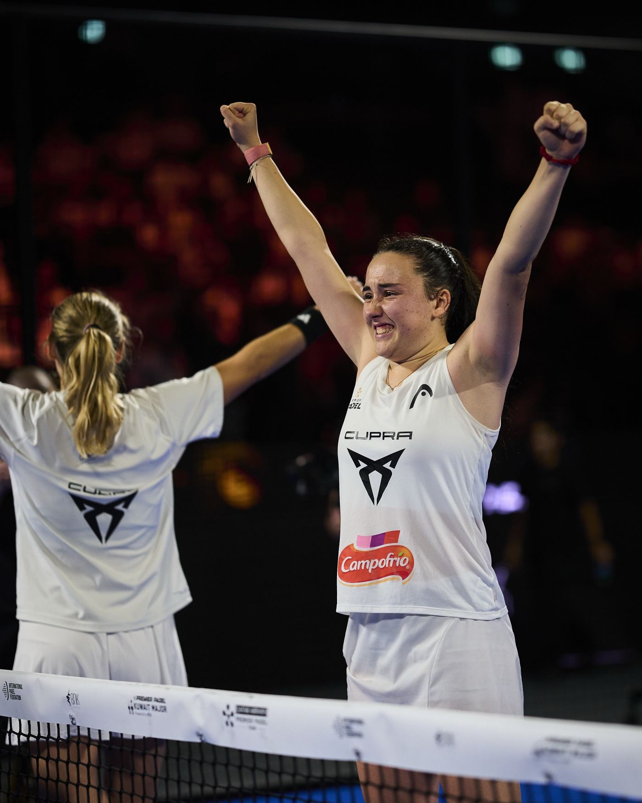

Actualidad ·
Arce y Tello jugarán la final de Kuwait contra Coello y Tapia; Ari y Andrea, contra Triay y Brea
Hace una semana, Arce y Tello perdían una final en Melilla. Hoy juegan la de un Major. Ari Sánchez y Andrea Ustero llegan tras más de tres horas y media de semifinal. Contra Triay y Brea van seis a seis este año.